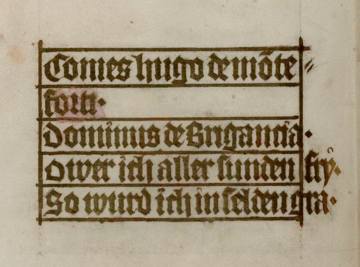
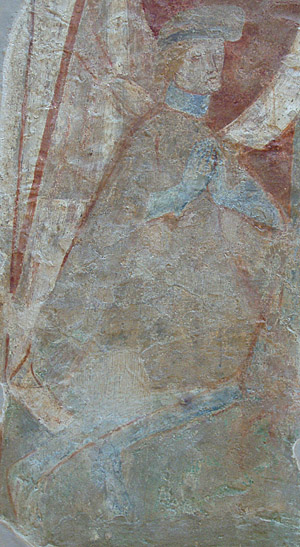
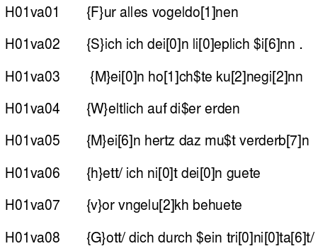
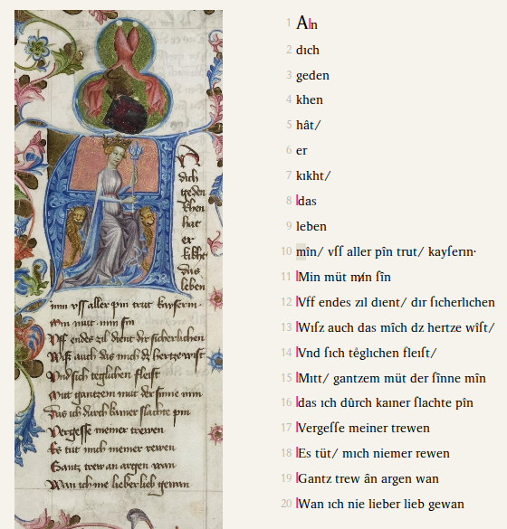
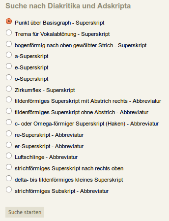
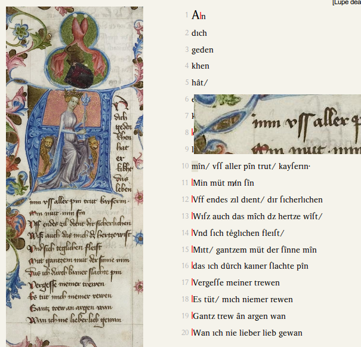

Hugo von Montfort: Das poetische Werk
Table of Contents
Abstract
Hugo von Montfort – The poetic work calls itself a hybrid edition. In fact one would hesitate to call this a digital edition as from the beginning, the main purpose of the website had been to accompany the printed edition. Nevertheless, over time more materials have been assembled and offer multiple ways of access: for textual scholarly work (Lesefassung), for linguistic and palaeographic interests (Augenfassung), for listening. Unfortunately the texts are distributed over several websites and cannot be linked as one would wish. Additionally, the Augenfassung is available only for the main manuscript. Restrictive licensing will not allow to make use of the material other than reading on-line. This is regrettable as the original edition has been award-winning.
Einleitung
Hugo XII., Graf von Montfort-Bregenz, (1357 bis 1423) war Hochadeliger der Steiermark. Zwar war er über seine Mutter mit den Habsburgern verwandt, verbesserte seine Position aber durch allgemein erfolgreiches politisches Handeln im Dienste der Habsburger sowie durch geschickte Heiratspolitik ständig und stieg bis zum steierischen Landeshauptmann auf. Sein Leben ist durch zahlreiche Quellen gut belegt. Hinter dem Ruf als Politiker bleibt der Ruf als Dichter deutlich zurück. Hinsichtlich seiner literaturgeschichtlichen Bedeutung steht der Montforter vor allem im Schatten des Südtirolers Oswald von Wolkenstein. Doch als einer der letzten Dichter, der die verfestigten Formen des Minnesangs noch einmal mit neuem Geist zu beleben versuchten, ist seinem Werk seit dem späten 19. Jh. immer wieder Aufmerksamket zuteil geworden. Dabei liegt der Wert seiner Dichtung mehr in der Gestaltung aus eigenem Erleben als in besonderer Kunstfertigkeit, da er seine Lieder nicht als Huldigung an eine hohe unerreichbare Herrin, sondern als Preis der eigenen Ehefrau verfasst. (Werner, 68)

Hugo unterteilt sein poetisches Werk in Rede, Brief und Lied.1 In den Reden in Gedichtform entwickelt er seine ritterlich-ethischen und ästhetischen Anschauungen über die Welt und übt scharfe Kritik am sittlichen Verfall seiner Zeit und ihrer Ordnungsmächte. Die Briefe entstanden auf Reisen und haben die Form von Minnebriefen. Die Lieder sind teils didaktisch-moralisierend, teils Minnelieder, in denen der Dichter anders als in klassischen Minneliedern das Lob der eigenen Gattin singt. (Werner, 70). Das Werk umfasst in der Edition 40 Nummern und ist in vier Handschriften überliefert:
- Heidelberg, Universitätsbibliothek, Cod. pal. Germ. 3292
- Berlin, Staatsbibliothek, Ms. germ. Fol. 757,21
- Colmar, Bibliothèque de la Ville, Ms. 84
- Vorau, Augustiner-Chorherrenstift, Hs. 389
Frühere Editionen
Mit der Edition Hofmeisters wurde den drei zuvor veröffentlichten und „stark eingeschränkt" (Hofmeister 2005, XIII) verfügbaren Editionen (Bartsch 1879, Wackernell 1881, Thurnher, Spechtler und Jones 1978–1981) eine weitere Neuausgabe zur intensiveren Beschäftigung hinzugefügt. Besonders die letzte Edition von Thurnher et.al. ist interessant, weil sie in Umfang und Vorgehensweise der hier zu rezensierenden Neuausgabe ähnelt. Sie bietet in Teil I die übliche Einführung in Leben und Werk, die Beschreibung der Überlieferung und der Handschriften, eine Bibliographie, das Vollfaksimile von cpg 329 sowie Abbildungen der Streuüberlieferung, jeweils in Schwarz-Weiß-Abbildungen. Das Faksimile der Heidelberger Handschrift wird geringfügig verkleinert dargeboten (Schriftspiegel 16,5×13 cm statt 21×15 cm), die Abbildungen der Streuüberlieferung etwa in Originalgröße. Teil II enthält die Transkription von Gedichten und Melodien. Die Transkription hat eine zweifache Funktion: „Sie soll einerseits die Lektüre des Faksimiles erleichtern, zum anderen ist sie für Übungszwecke im akademischen Lehrbetrieb gedacht. […] Die drei Einzelüberlieferungen (Berlin, Colmar, Vorau) bleiben unberücksichtigt, weil diese Transkription eine kritische Ausgabe nicht ersetzen kann und will." (Spechtler 1978, III) Der drei Jahre später erschienene Teil III liefert schließlich eine Verskonkordanz und Stellenliste (Word Finding List). Im Nachwort wird hierzu – bemerkenswerterweise ja schon 1981 – bemerkt, dass „Texte für die verschiedensten literatur- und sprachwissenschaftlichen Untersuchungen durch den Computer so aufbereitet werden, wie sie wirklich in den Handschriften überliefert sind. Das ist nur dann gewährleistet, wenn handschriftennahe Ausgaben vorliegen oder wenn überhaupt handschriftentreue Transkriptionen zur Alphabetisierung durch EDV verwendet werden." (Jones et.al. 1981, 3)
Neuedition
Die Edition des poetischen Werks von Hugo von Montfort wurde 2005 von Wernfried Hofmeister publiziert. Sie wurde hybrid veröffentlicht - die Druckausgabe als Studienausgabe im DeGruyter-Verlag, die elektronische Publikation auf der Webseite des Instituts für Germanistik der Karl-Franzens-Universität Graz. Diese Seite hat kein Impressum, reklamiert aber das Copyright auf die Texte für Hofmeister und das Copyright für das Layout für H. Klug. 2007-2010 wurden die Materialien um eine neue Visualisierung und um erweiterte Suchmöglichkeiten ergänzt, die getrennt von den ursprünglichen Materialien auf einer neuen Webseite im Rahmen der Informationsplattform GAMS – Geisteswissenschaftliches Asset Management System – angeboten werden. Für diese Seite existiert ein Impressum, auf welchem das Institut als Herausgeber, Hofmeister als Projektleiter und das Zentrum für Informationsmodellierung der Universität Graz für die technische Umsetzung angegeben werden. Diese Rezension bezieht sich auf die ältere Webseite, die Einbindung der Augenfassung zur Visualisierung und Suche wird allerdings zu thematisieren sein.
Gegenstand und Inhalt der begleitenden Internet-Plattform
Die Webseite bietet eine Transliteration aller bekannten Textzeugen. Die Texte stehen in drei Formaten (PDF, RTF u. TXT) zur Verfügung. Sämtliche Download-Formate sind inhaltlich identisch, da die Textgestalt unter Vermeidung störender Formatierungen allein auf dem internationalen ASCII-Zeichencode beruht. Die Transliterationen verwenden Symbole und Codes, die in separaten Dokumenten aufgeschlüsselt werden. Diese umfassen je eine Kodierungstabelle für alphabetische Zeichen und Sonderzeichen wie Abbreviaturen, Ligaturen, Interpunktionen, Symbole und Sub- bzw. Superskripte, sowie eine Sternsymbol-Liste, welche die in den Transliterationen vorkommenden Stellen referenziert und den zugehörigen Kommentar liefert. In einer für Fol. 1ra beispielhaft gezeigten Transponiersynopse können Faksimile, Basistransliteration und gedruckter Lesetext nebeneinander gesehen werden. Diese Synopse ist auch im Buch abgedruckt.
Die Edition bietet digitale Faksimiles der Streuüberlieferung sowie eine Beispielseite aus dem Heidelberger Codex. Da der Heidelberger Codex seit 2005 online als Volldigitalisat verfügbar ist, wird nachträglich zusätzlich für den ganzen Codex auf die Heidelberger Seite verwiesen. Die Abbildungen der Streuüberlieferung liegen als Farbabbildungen vor. Die Auflösungen der Bilder sind unterschiedlich: Der Berliner Codex ist in gleicher Größe abgebildet wie schon in der Edition von 1978, die Handschrift aus Colmar ist demgegenüber sogar kleiner reproduziert. Lediglich die Vorauer Abbildungen sind stark vergrößert und bieten einen deutlichen Mehrwert gegenüber der Vorgängeredition. Der mehrfach in der Lesefassung erwähnte „Erstabdruck" der Streuhandschriften bezieht sich also „nur" auf die Transkriptionen.

Was die begleitende Seite dem Buch an Abbildungen und der daraus resultierenden Möglichkeit der parallelen Anzeige voraus hat – auch wenn diese nur in der wiederum abgeleiteten Augenfassung realisiert ist –, das fehlt ihr an Wissen, welches die Edition ausmacht: Die Apparate für Textkritik und Sachkommentar sind im Wesentlichen nur im Druck verfügbar. Lediglich einige Phänomene, die als Schreibbesonderheiten in den Sachkommentar eingegangen sind, liegen zugleich in der Sternsymbol-Liste kommentiert und damit elektronisch vor. Dass die Apparate in der elektronischen Edition nicht vollständig zur Verfügung stehen ist besonders zu bedauern, da selbst neuere Publikationen – wenn überhaupt – oft nur mit einer „moving wall" von nur zwei bis drei Jahren belegt sind. Auch die Tatsache, dass die Publikation bereits 10 Jahre zurückliegt konnte nicht dafür sorgen, dass auch die Apparate ihren Weg in die digitalen Plattformen gefunden haben.
Ziele und Methoden
Auf der Startseite der „Begleitende[n] Internet-Plattform zur Neuausgabe" liest man, dass es sich um „eine Hybridedition [handelt], die auslotet, wie ein dichterisches Werk des Mittelalters in seiner multimedialen Form repräsentiert werden kann."3 „Zur Stärkung dieses 'missionarischen' Impetus" (Hofmeister 2005, XIII) wurde eine mehrstufige Editionstechnik eingesetzt: Eine elektronischen Basistransliteration bietet eine äußerst überlieferungsnahe Codierung aller handschriftlichen Graphien. Für die Druckausgabe wurde der Lesetext stringent aus der Basisliteration abgeleitet. Dieser zeichnet sich vor allem durch graphetische Reduktion aus, welche eine verbesserte Les- und Zitierbarkeit erreichen soll. Die Augenfassung soll „die editorische Informationsdichte der abstrakt ASCII-codierten Basistransliteration (BT) des cpg 329 Hugos von Montfort auf einen Blick sichtbar [...] machen und ihr detailliertes Durchsuchen in unmittelbarem Bildkontakt mit der Überlieferung [...] ermöglichen".4 Die Melodiefassung schließlich „erleichtert in einer modernen Notation die sangliche Umsetzung der zehn mit Melodien überlieferten Texte. Sie ist die Basis für die Hörfassung, die Eberhard Kummer eingespielt hat."5
Von der Startseite der Edition führen Links zu Lese-, Augen-, Hör- und Melodiefassung. Der Link zur Lesefassung führt leider nur zur Webseite des gedruckten Buches bei DeGruyter. Die eigentlichen Editionstexte verbergen sich hinter dem nur im linken Frame aufgeführten Link „Basistransliteration". Dort werden Basistransliterationen für alle vier Überlieferungsträger zum freien Download zur Verfügung gestellt. Der Editor bezeichnet die Transliterationen als „hyper-diplomatisch", d.h. als genaue Überlieferungsabschriften, aus denen der Text der Studienausgabe wiederum „dynamisch" abgeleitet worden ist.Auch der Link zur Melodiefassung führt zu DeGruyter, da die Melodien als Anhang im gedruckten Werk veröffentlicht sind. Der Link zur Hörfassung wiederum führt zum ORF-Shop, wo eine Einspielung der Lieder käuflich erworben werden kann.
Basistransliteration
Die Internet-Plattform „präsentiert im Sinne einer mehrschichtigen internetbasierten Hybrid-Edition zum einen die gesamte Überlieferung in Form aller Faksimiles und zum anderen deren Basistransliteration; Codierungstabellen und weitere Materialien traten von Beginn weg ergänzend hinzu."6 In der Kodierungstabelle für alphabetische Zeichen sind bis zu drei graphetische Varianten für jeden Groß- und Kleinbuchstaben verzeichnet. Großbuchstaben sind je nach Stellung in Text abweichend als Kleinbuchstaben wiedergegeben.7 In der Kodierungstabelle für Sonderzeichen werden 18 Phänomene aufgelistet, die in der Transliteration mit Zahlen adressiert sind und wiedergegeben werden, sowie 11 Abbreviaturen und Ligaturen und weitere 11 Markierungen für Gestaltungsmerkmale, Auslassungen usw. nachgewiesen. Mit dieser Vielfalt kommt Hofmeister einer handschriftengetreuen Transliteration noch näher als Spechtler 1981, doch kannte auch dieser bereits einige Kodierungen, mit denen er der damaligen Computergeneration paläographische Besonderheiten nahebringen wollte und diese Besonderheiten verarbeitbar machen konnte: So wurden beispielsweise Punkte über Vokalen, welche mehrere Funktionen haben könnten, nach dem jeweiligen Vokal ausgegeben, z.B. möchte als MO:CHTE. (Spechtler 1981, 5)

Augenfassung
Die Plattform zur Veröffentlichung der Augenfassung, das Geisteswissenschaftliche Asset Management System (GAMS), beschreibt sich selbst als System „zur Verwaltung, Publikation und Langzeitarchivierung digitaler Ressourcen"9 Die Augenfassung wird auf der Übersichtsseite des GAMS als Hybridedition präsentiert, „die auslotet, wie ein dichterisches Werk des Mittelalters in seiner multimedialen Form repräsentiert werden kann."10, welche „auf einer nach dem Prinzip der Grazer dynamischen, mehrschichtigen Editionsmethode von Andrea und Wernfried Hofmeister mikrographetisch aufbereitete[n] Basistransliteration [basiert]."11
Im Rahmen dieser Präsentation sind lediglich ein Einleitungstext zur Augenfassung, die Edition des Haupttextzeugen, nach Texten und Seiten gegliedert, sowie die Suche verfügbar. Die Augenfassung „wurde 2007-2010 als eine Art Human Interface entwickelt, um die editorische Informationsdichte der abstrakt ASCII-codierten Basistransliteration des cpg 329 Hugos von Montfort auf einen Blick sichtbar zu machen und ihr detailliertes Durchsuchen in unmittelbarem Bildkontakt mit der Überlieferung zu ermöglichen. Damit soll für den Forschungs- wie auch für den Lehrbetrieb ein Anstoß zu einer explorativen Erschließung der Werke des Montforters geleistet werden."12


Umsetzung und Präsentation
Die Gestaltung der Webseite mutet auch nach der letzten Aktualisierung im Juni 2014 unverändert altertümlich an. Die Frame-basierte Bildschirmaufteilung verbirgt die geladenen Inhalte hinter der unveränderlich angezeigten Basisadresse der Site. Die Seite ist nicht für die Größe des Viewports optimiert. Da die Frames in ihrer Größe außerdem nicht verändert werden können, werden auf kleinen Monitoren die Navigationspunkte in der linken Spalte von der Abbildung der Druckausgabe der Edition verdeckt.

Insgesamt ist die dauerhafte Trennung der beiden Webseiten zu bedauern, da die Verbindung der ursprünglich zur Verfügung gestellten Materialien mit der graphisch sehr schön umgesetzten Visualisierung und den Suchmöglichkeiten der Augenfassung wesentlich zum Verständnis und zur Nutzbarkeit der Edition beitragen würde. Hofmeister räumt selbst ein, dass die „Basistransliteration jedoch jenseits des Forschungsprojekts DAmalS nicht die erhoffte Aufmerksamkeit des eigenen philologischen Faches erlangte" und daher die Idee aufkam, „den Informationsreichtum dieser elektronischen Textbasis mittels einer ikonischen Recodierung augenfälliger zu machen".13
Zitierbarkeit
Der Autor erwähnt in der gedruckten Ausgabe bereits die Möglichkeit einer Adressänderung der Edition. Er führt als mögliche Strategien zur Auffindung der Edition den Server des DeGruyter-Verlags und den Einsatz von Suchmaschinen an. Beides ist inhaltlich richtig, geht aber an der Grundanforderung nach zitierbaren, stabil referenzierbaren Texten vorbei. Die Bedenken sind für die Hauptseite der Edition (Begleitende Internet-Plattform) bisher unbegründet, doch könnten Benutzer aufgrund der Trennung in Editionsseite und Augenfassung, die unter verschiedenen Adressen zu finden sind, irritiert werden. Die Basisadresse der Augenfassung ist ebenfalls bislang stabil, doch sind die Angebote des GAMS insgesamt 2014 so überarbeitet und in eine neue technische Umgebung integriert worden, dass nicht alle Adressen stabil geblieben sind.
Die Adressen der ursprünglichen Editionsseite sind zwar stabil und auch die Texte nutzen allesamt die Nummerierungschemata der gedruckten Edition bzw. beziehen sich konkret auf Folio- und Zeilenangaben aus den transkribierten Handschriften, auf Textebene gibt es also keine Zitationsschwierigkeiten. Wohl aber gibt es Hindernisse auf der Dateiebene: Die Transliterationen können nur als Gesamtdatei in Form des PDF abgerufen werden und die Paratexte werden -wie oben beschrieben- in Frames angezeigt und sind nicht unter eindeutigen Adressen erreichbar, weil die Frames die eigentlichen Adressen „verstecken".
Anders bei der Augenfassung: Hier haben alle Seiten eine eigene URL, die aber zumeist aus kryptischen Abrufbefehlen der Software Fedora zusammengesetzt ist. Die Textauszüge der Augenfassung sind teils unter vorhersehbaren, verständlichen Adressen erreichbar: Die in der Edition durchnummerierten Texte der Heidelberger Handschrift enthalten als Teil der URL die Zeichenkette „get#1HTx", wobei das „x" durch die jeweilige Nummer des Textes ersetzt werden muss. Möchte man aber eine Binnengliederung aufrufen, beispielsweise Strophe 3 von Text 3, so lautet der letzte Teil der URL „get#1H3.VA.S3"; man müsste nunmehr wissen, dass die dritte Strophe des dritten Textes auf Folio 3va beginnt, um direkt dorthin springen zu können. Beim Aufruf der synoptischen Ansicht der Handschrift und der Transliteration wiederum ist der entscheidende Teil des Aufrufs in der Mitte der URL zu finden, z.B. http://gams.uni-graz.at/fedora/get/o:me.1v/bdef:TEI/get.
Rechtedeklaration
Wie oben beschrieben wird für die Texte das Copyright von Hofmeister reklamiert, für das Layout von H. Klug. Aus verlagsrechtlichen Gründen konnte auf der Webseite keine elektronische Fassung des Drucktexts angeboten werden; Ende 2010 ist der Volltext der Druckfassung allerdings in die Mittelhochdeutsche Begriffsdatenbank14 eingespeist worden.
Im Rahmen der Augenfassung gibt es keine dezidierte Aussage zur Rechtslage und zur Nutzung der Materialien, so dass die Rechtedeklaration der übergeordneten GAMS-Seite gelten müsste. Hier ist auf allen Seiten das Logo von und Link zur Lizenz Creative Commons BY-NC-SA 4.0 zu sehen. Doch bietet gerade diese (str)enge CC-Lizenz einigen Grund zur Reibung, denn wenn der Hauptbestandteil der Texte eine handschriftennahe Umschrift darstellt und die Handschrift natürlich längst gemeinfrei ist, bezieht sie sich dann womöglich nur auf den Einleitungstext zur Augenfassung? Oder muss eine Transliteration, wie sie hier geboten wird, doch als weitergehende editorische Leistung, die ein Urheberrecht begründet, angesehen werden?
Fazit. Oder: Handelt es sich um eine digitale Edition?
Die Webseite „Hugo von Montfort – Das poetische Werk" nennt sich schon im Untertitel „Begleitende Internet-Plattform" und bald darauf „Hybridedition". Wernfried Hofmeister will Materialien zur Verfügung stellen, welche das Werk Hugos in seiner multimedialen Form repräsentiert. Auf der Webseite selbst findet man nun immerhin die verdienstvollen, sehr handschriftennahen Transliterationen, ansonsten aber nur Links zu den eigentlich multimedialen Inhalten, sei es zur CD oder auch zur Augenfassung.
Dass die Verknüpfung von Bild und Text auf einer anderen Webseite stattfindet, während sie auf der Editionsseite nur unverbunden – monolithisch – nebeneinander stehen, dass die digital vorliegenden Texte auf einer anderen Webseite durchsucht werden müssen ohne alle Teile zu integrieren. Dass den digital zur Verfügung gestellten Texten die kritischen Teile (immer noch) fast vollständig fehlen und diese nur im Druck verfügbar sind, hinterlässt beim Rezensenten ein irritierendes Gefühl.
Ob der Aufwand dieser Edition sich lohnte, da auf den ersten Blick der Unterschied zur Edition von 1978 recht gering ausfällt, mögen künftige Fragestellungen und Algorithmen zeigen. Die Unterscheidung von Schreibern aufgrund der Schreibweisen sind ein erster Fingerzeig. Wernfried Hofmeister wurde für diese Edition mit dem „Erzherzog-Johann-Forschungspreis des Landes Steiermark 2006" ausgezeichnet. 2015 könnte man sich die Ressourcen der hybriden Edition noch ein wenig integrierter, vollständiger, zitierfähiger und verfügbarer vorstellen.
Bibliography
- Bartsch, Karl, ed. Hugo von Montfort. Tübingen 1879. (Bibliothek des Litauischen Vereins in Stuttgart; 143).
- Hofmeister, Wernfried, ed. Hugo von Montfort: Das poetische Werk [Texte, Melodien, Einführung]. Mit einem Melodie-Anh. von Agnes Grond. Berlin [u.a.] : de Gruyter, 2005.
- Hofmeister, Wernfried, ed. Hugo von Montfort: Das poetische Werk. Begleitende Internet-Plattform zur Neuausgabe. Accessed 07.06.2016. http://www-gewi.uni-graz.at/montfort-edition.
- Hugo von Montfort: Das poetische Werk – Augenfassung. Graz 2007–2015. Accessed 07.06.2016. http://gams.uni-graz.at/me.
- Thurnher, Eugen, Franz V. Spechtler, George F. Jones. Hugo von Montfort. 3 Bde. Göppingen 1978–1981.
- Thurnher, Eugen, Franz V. Spechtler und Ulrich Müller, eds. I: Die Heidelberger Handschrift cpg 329 und die gesamte Streuüberlieferung. In Abbildungen. Göppingen 1978. (Litterae; 56).
- Spechtler, Franz V.: II: Die Texte und Melodien der Heidelberger Handschrift cpg 329. Transkription. Göppingen 1978. (Litterae; 57).
- Jones, G.F., Franz V. Spechtler und R. Uminsky, eds. III: Verskonkoranz zur Heidelberger Handschrift cpg 329. Göppingen 1981. (Litterae; 58).
- Wackernell, Joseph E., ed. Hugo von Montfort. Mit Abhandlungen zur Geschichte der deutschen Literatur, Sprache und Metrik im XIV. und XV. Jahrhundert. Innsbruck 1881. (Ältere Tirolische Dichter; 3/1881). Accessed 07.06.2016. https://archive.org/details/hugovonmontfort00hugogoog.
- Werner, Wilfried: Cimelia Heidelbergensia: 30 illuminierte Handschriften der Universitätsbibliothek Heidelberg — Wiesbaden, 1975. Accessed 07.06.2016. http://digi.ub.uni-heidelberg.de/diglit/Cimelia1975/0065.
Notes
- Vgl. https://web.archive.org/web/20150605102530/http://gams.uni-graz.at/archive/get/o:me.2/sdef:HTML/get#1H39.VB.S41 und https://web.archive.org/web/20150605102530/http://gams.uni-graz.at/archive/get/o:me.2/sdef:HTML/get#1H47.VB.S26. ↑
- https://web.archive.org/web/20130930025741/http://digi.ub.uni-heidelberg.de/diglit/cpg329. ↑
- https://web.archive.org/web/20150227195452/http://www-gewi.uni-graz.at/montfort-edition/. ↑
- http://web.archive.org/save/http://www-gewi.uni-graz.at/montfort-edition/index.html?/montfort-edition/augenfassg.html. Zu den - aufgrund des Alters der Webseite - nicht zeitgemäßen Eigenarten gehört es, dass diese Seite nicht separat aufgerufen werden kann. Stattdessen wird man von einem Javascript auf das Haupt-Frameset weitergeleitet. Dies macht es Angeboten wie dem Internet Archive unmöglich, die Seite adäquat zu archivieren. Die vorgenannte Seite steuert man deshalb am Besten von der in Anmerkung 3 genannten Adresse an. ↑
- Wie Anmerkung 3. ↑
- http://web.archive.org/save/http://www-gewi.uni-graz.at/montfort-edition/index.html?/montfort-edition/genese.html. Vgl. Anmerkung 4. ↑
- http://www-gewi.uni-graz.at/montfort-edition/mat/Alphabet-Kodierung.pdf (Accessed 07.06.2016). ↑
- Vgl. http://static.uni-graz.at/fileadmin/_Persoenliche_Webseite/hofmeister_wernfried/ENDBERICHT_DAmalS_gesamt.pdf (Accessed 07.06.2016). ↑
- https://web.archive.org/web/20160116210131/http://gams.uni-graz.at/archive/objects/context:gams/methods/sdef:Context/get?mode=about. ↑
- https://web.archive.org/web/20160116203043/http://gams.uni-graz.at/context:gams.projekte. ↑
- So früher auf der GAMS-Homepage, heute als Zitat nur noch in einer Präsentation fassbar: Martina Semlak: Publikationsworkflows und Standardwerkzeuge. Chemnitz 2012. http://docplayer.org/docview/23/1874560/ (Accessed 07.06.2016). ↑
- https://web.archive.org/web/20150306210826/http://gams.uni-graz.at/archive/objects/collection:me/methods/sdef:Context/get?mode=about. ↑
- http://web.archive.org/save/http://www-gewi.uni-graz.at/montfort-edition/index.html?/montfort-edition/genese.html. Vgl. Anmerkung 4. ↑
- http://mhdbdb.sbg.ac.at:8000/mhdbdb/App?action=TextInfoEdit&text=HUG. (Accessed: 16.1.2016). ↑
@article{montfort,
author = {Schaßan, Torsten},
title = {Hugo von Montfort: Das poetische Werk},
journal = {RIDE – A review journal for digital editions and resources},
number = {4},
year = {2016},
doi = {10.18716/ride.a.4.3},
url = {https://doi.org/10.18716/ride.a.4.3},
}TY - JOUR
AU - Schaßan, Torsten
TI - Hugo von Montfort: Das poetische Werk
T2 - RIDE – A review journal for digital editions and resources
IS - 4
PY - 2016
DA - 2016/06
DO - 10.18716/ride.a.4.3
UR - https://doi.org/10.18716/ride.a.4.3
PB - Institut für Dokumentologie und Editorik e.V.
LA - de
ER - Schaßan, T. (2016). Hugo von Montfort: Das poetische Werk. RIDE – A review journal for digital editions and resources, (4). https://doi.org/10.18716/ride.a.4.3Schaßan, Torsten. "Hugo von Montfort: Das poetische Werk." RIDE – A review journal for digital editions and resources, no. 4, 2016. https://doi.org/10.18716/ride.a.4.3.Schaßan, Torsten. "Hugo von Montfort: Das poetische Werk." RIDE – A review journal for digital editions and resources, no. 4 (2016). https://doi.org/10.18716/ride.a.4.3.